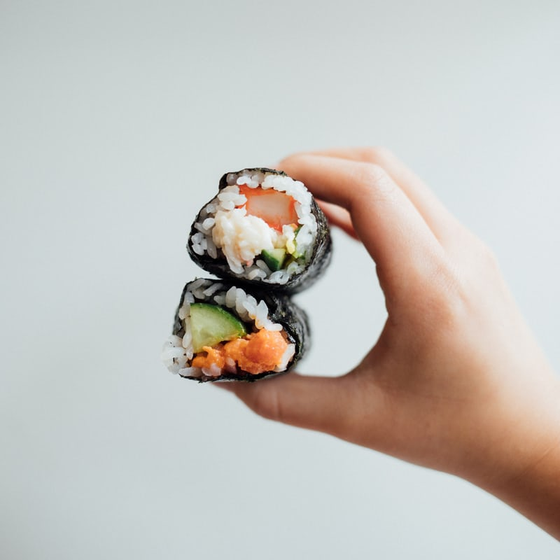
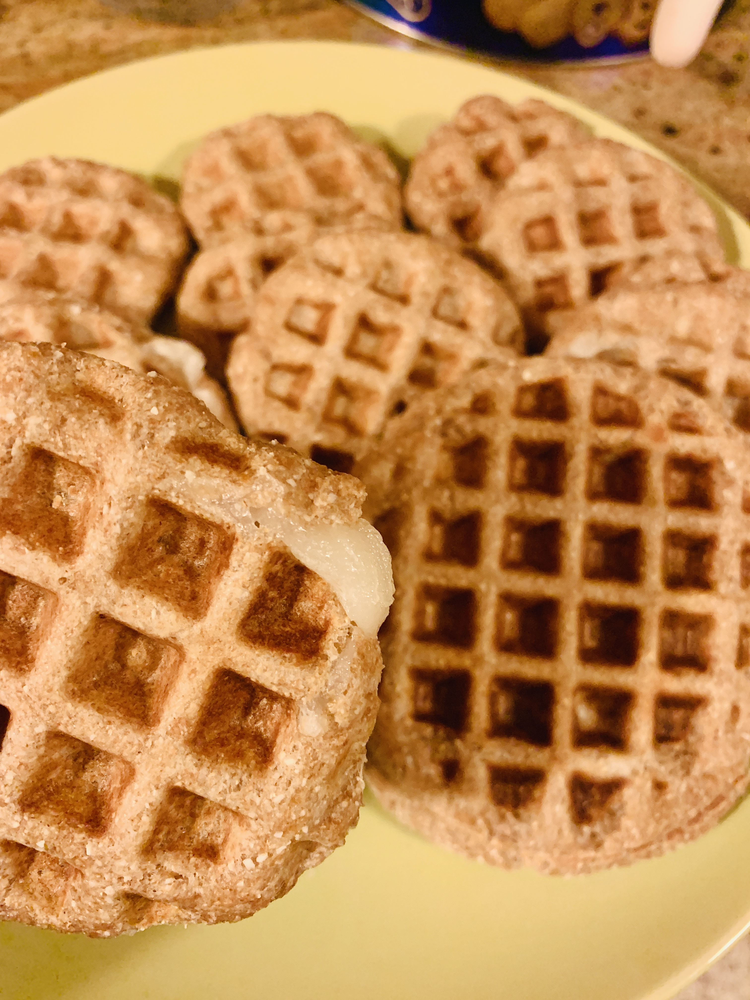
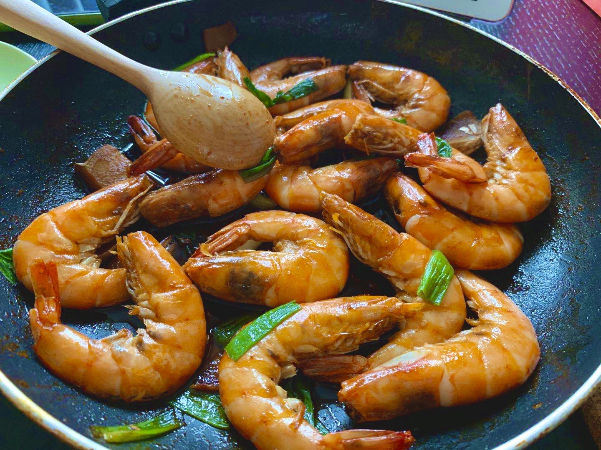

- Meat Double Sushi Roll
- Healthy Whole Wheat Waffles
- Deep Fried Prawns
Meat Double Sushi Roll

Ingredients
- Rice
- Plastic wrap
- Vegetables
- Egg
- Ground beef
- Roasted seaweed
- Pork sung
Instructions
- First of all, make sure your rice at least an hour or two in advance so that it has time to cool to room temperature before assembling your rolls.
- Then, add the seasonings, eggs to the beef ground and mix well. spread a thin layer of beef ground over the nori . Put in the oven and bake for 20-30 mins.
- Spread a thin layer of rice over the nori and add the fillings, add your ingredients toward the center of the rice-covered nori. Don’t forget roll your beef sushi in and don't overpack it.
- Roll up the sushi.
Healthy Whole Wheat Waffles

Ingredients
- Whole wheat flour
- Coconut flour
- Low fat milk
- Rice cake
- Yeast/Sweetener
- Waffle maker
Instructions
- In a large mixing bowl whisk together the whole wheat flour, coconut flour, low-fat milk, sweetener, yeast and pour some water until well combined.
- Then, start to roll it into a ball.
- Cover the dough with plastic warp and waiting for 50mins.
- Tuck the rice cake into the dough
- Preheat your waffle maker. Cook the waffles until golden brown and crisp, wait for 1-2mins.
Deep Fried Prawns

Ingredients
- Shrimp
- Ginger
- Garlic
- Green onion
- Soy source / sugar / oyster sauce /
- Oil / Salt
- Frozen Green bean
Instructions
- Soak the shrimp in warm, lightly salted water for 5 minutes.
- Prepare all the ingredients. Mix all the seasoning well.
- Rinse in cold water, drain and pat dry with paper towels. Cut off the head and whisks.
- Heat the oil in a wok over medium-high heat. Put the garlic and ginger into the pot. Then place the prawns in the hot oil and turning as needed, until golden brown.
- Put all the seasonings in and sprinkle the green beans and chopped green onion on top.